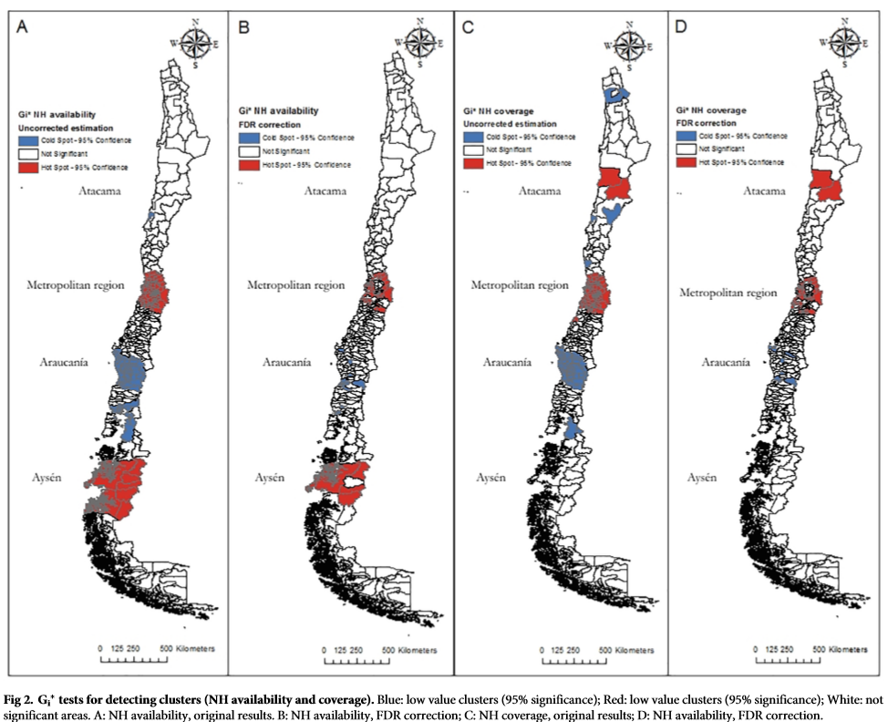
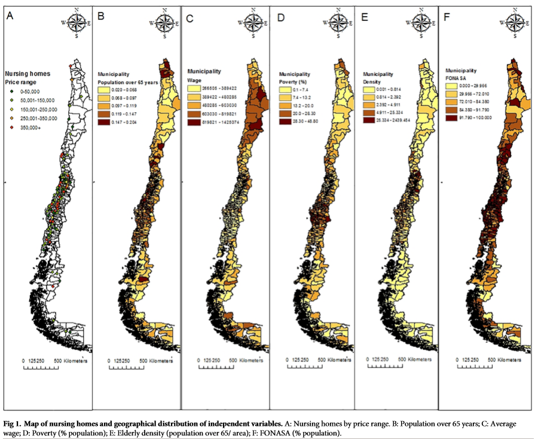

Study Objectives:
Identifying the determinants of the geographical location of nursing homes in Chile at municipality level
Methodology:
- Global spatial autocorrelation using Global Moran’s I statistic, G test
- Indicates the presence of spatial correlation of Long-Term Care centers (LTC)
- To identify areas where coverage of nursing homes is low or high (hotspot and cold spot detection) 
- Local Moran’s I statistics/Geary’s C
- Used to identify spatial patterns individual municipality
- Using queen contiguity matrix to estimate regressions 
- Learning Points:
- Identifying areas with high/low availability or coverage of nursing homes with respect to the global average, instead of areas where these attributes are similar or different between municipalities
- The determining factor to open nursing homes in an area depends on demographics and socioeconomic conditions and other factors